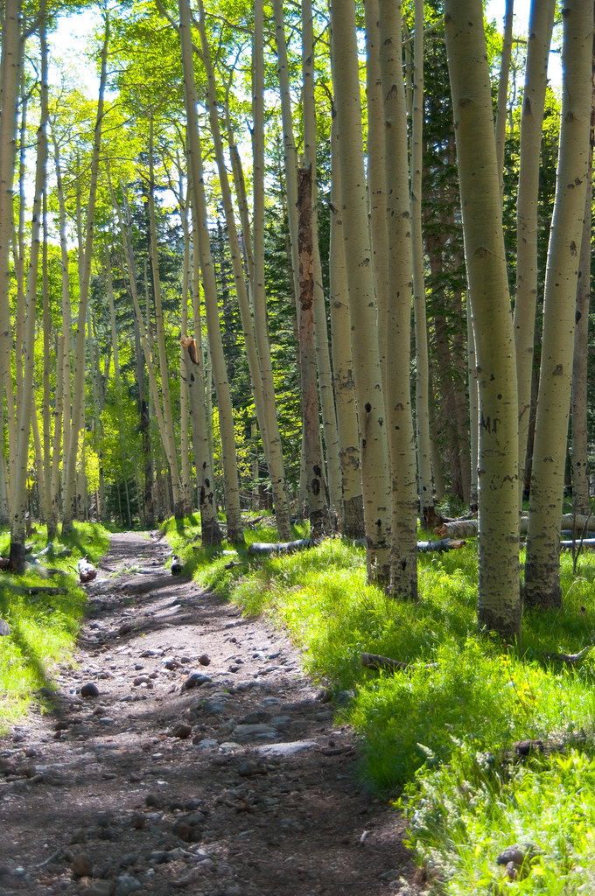
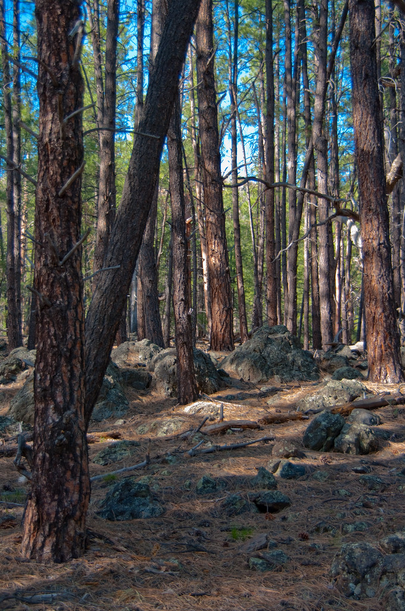

moksa、という名前
moksaという名前は、サンスクリット語で「解脱」「解放」を意味するのだそうです。訪れた方のクチコミで、そう教えていただきました。
山道を上り、緑の匂いと蝉の声に包まれてたどり着くこの場所で過ごす時間は、肩の力がすこしずつ抜けていくような感覚に近いのかもしれません。
何かをするためではなく、何もしないために、山に分け入る。moksaという名前は、そんな時間の入り口なのだと思います。

古民家の空気と、座敷の時間
古民家的な空間に、手作りの温もりが静かに息づいているような佇まい。座敷もあり、いつまでもそこに座っていたくなる、という声も聞かれます。
窓の外には木々の緑が広がり、季節の空気がそのまま店内に流れ込んでくるようです。
moksaについて、もっと見る →
音楽が流れる、静かな場所
店内には、素敵な音楽が静かに流れているという声もあります。山の空気と音楽と、一杯のコーヒー。そのどれも主張しすぎず、ただそこにある時間を少しだけ豊かにしてくれるようです。
moksaについて、もっと見る →訪れた方の声
Google評価 5.0(325件のクチコミ) Googleマップで見る
★★★★☆
Googleさんに近くのコーヒーやさんと聞いて、雰囲気が良さげだったので立ち寄りました。icedカフェオレを頂きましたが、コーヒー色の氷で味が薄まらず、空調の効いた古民家的なスペースで最後まで美味しく頂けました。近所にあったら頻繁に立ち寄りたいお店でした。
★★★★★
旅の途中、チャリで通りすがりに立ち寄りました。美味しいアイスコーヒーを頂き、隣のカフェスペースで一服。素敵な音楽の流れる、とても落ち着けるカッコイイ空間でリラックス出来ました〜🎵 座敷もあって、いつまでもいられそう。。☺️✨ 目の前には山が広がり、セミの音も相まって、とても気持ちが良かったです！！
★★★★★
お店は緑に囲まれたとても気持ちの良いロケーションにあり、手作り感のあるセンスの良い空間が広がっています。窓から見える木々の緑を眺めながら、丁寧に淹れられた美味しいコーヒーをいただく時間は、まさに至福のひとときです。以前はイベントへの出店も多かったそうですが、今では口コミで評判が広がり、お店の方へひっきりなしにお客さまが訪れるほどの人気店になっています。お話を伺うと、わざわざイベントへ出向かなくても、この場所を目指して来てくれる方が増えたそうで、ファンの一人として自分のことのように嬉しくなりました。現在は隣にテラス席も建設中とのことで、完成すればさらに開放的な空間でコーヒーを楽しめるようになりそうです。お店の方のお人柄も良く、これからもずっと応援し続けたくなるような、下田の宝物のような一軒です。
★★★★★
南伊豆に来たら是非行ってもらいたいイチオシのお店。自然の中で格別のコーヒーを頂けます。のんびりくつろげるスペースもあります。お店の方もとても親切です。コーヒー豆も買えます。南伊豆にこんなに美味しいおしゃれなお店があったのか！！って感じです。
★★★★★
ｍoksa(モクサ)さん、サンスクリット語で「解脱」「解放」を意味する言葉のようです。エスプレッソを楽しめるカフェです。午前中ならカプチーノもおすすめ!南伊豆のちょっと山の中ではあるのですが、ここで何もしなくていい時間を持ってると、なんとなく「ま、いっか…」と思えてきます。あっ、お水はイタリアのカフェでよくあるように炭酸水でした


山あいの一軒へ、どうぞ。